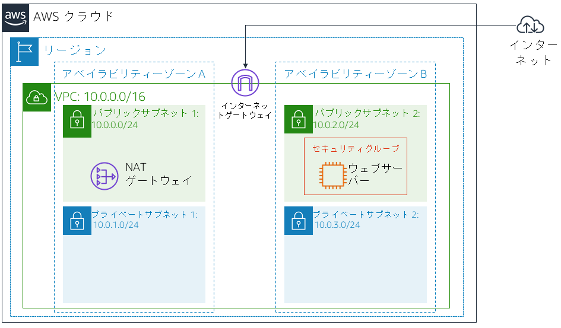
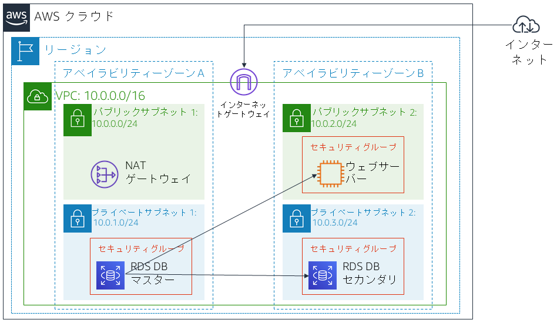

バージョン 4.6.6 (TESS2)
このラボは、リレーショナルデータベースのニーズを満たすために、AWS マネージドデータベースインスタンスを活用するという概念を補強するために作成されました。
Amazon Relational Database Service (Amazon RDS) を使用すると、クラウド内でリレーショナルデータベースを簡単にセットアップ、運用、スケールできます。Amazon RDS では、コスト効率に優れたキャパシティーを自由にサイズ変更しながら利用できます。また、時間のかかるデータベース管理タスクが自動で実行されるため、ユーザーはアプリケーションやビジネスに専念できるようになります。Amazon RDS では、Amazon Aurora、Oracle、Microsoft SQL Server、PostgreSQL、MySQL、MariaDB の 6 種類の一般的なデータベースエンジンから選択して利用できます。
目標
このラボを完了すると、以下のことができるようになります。
所要時間
このラボは、完了までにおよそ** 30 分**かかります。
シナリオ
ラボの開始時点では、インフラストラクチャが以下の状態になっています。 
ラボが終了した時点で、インフラストラクチャは以下の状態になります。

この手順の上部にある Start Lab ラボを開始 をクリックして、ラボを起動します。
[Start Lab] パネルが開き、ラボのステータスが表示されます。
Lab status: ready というメッセージが表示されるまで待ち、[X] をクリックして [Start Lab] パネルを閉じます。
この手順の上部にある AWS をクリックします。
新しいブラウザタブで AWS マネジメントコンソールが開きます。システムによって自動的にログインします。
ヒント: 新しいブラウザタブが開かない場合、通常、ブラウザによってサイトのポップアップウィンドウの表示がブロックされたことを示すバナーまたはアイコンがブラウザの上部に表示されます。バナーまたはアイコンをクリックし、[ポップアップを許可] をクリックします。
AWS マネジメントコンソールのタブをこの手順の横に配置します。ラボのステップを簡単に参照できるように、両方のブラウザタブを同時に表示することをお勧めします。
このタスクでは、ウェブサーバーから RDS DB インスタンスにアクセスできるようにセキュリティグループを作成します。セキュリティグループは、データベースインスタンスを起動するときに使用します。
AWS マネジメントコンソールの サービス メニューから [VPC] をクリックします。
左側のナビゲーションペインで [セキュリティグループ] をクリックします。
セキュリティグループを作成 をクリックし、以下のように設定します。
DB Security GroupPermit access from Web Security Group次に、インバウンドデータベースリクエストを許可するルールをセキュリティグループに追加します。
[インバウンドルール] ペインで ルールを追加 をクリックします
現在、このセキュリティグループにはルールがありません。Web Security Group からのアクセスを許可するルールを追加します。
以下のように設定します。
sg と入力して Web Security Group を選択Web Security Group に関連付けられている EC2 インスタンスからのインバウンドトラフィックをポート 3306 で許可するデータベースセキュリティグループが設定されます。
セキュリティグループを作成 をクリックします。
このセキュリティグループは、Amazon RDS データベースを作成するときに使用します。
このタスクでは、DB サブネットグループを作成して、RDS のデータベースで使用できるサブネットを指定します。各 DB サブネットグループには、2 つ以上のアベイラビリティーゾーンにサブネットが必要です。
ナビゲーションペインが表示されていない場合は、左上隅の メニュー アイコンをクリックします。
DB-Subnet-GroupDB Subnet Groupこれで、これらのサブネットが [選択したサブネット] の表に表示されます。
この DB サブネットグループは、次のタスクでデータベースを作成するときに使用します。
このタスクでは、マルチ AZ の Amazon RDS for MySQL データベースインスタンスを設定し、起動します。
Amazon RDS のマルチ AZ 配置を使用すると、データベース (DB) インスタンスの可用性と耐久性が向上します。これにより、DB インスタンスをプロダクションデータベースのワークロードに無理なく適合させることができます。マルチ AZ DB インスタンスをプロビジョニングすると、Amazon RDS はプライマリ DB インスタンスを自動的に作成すると同時に、異なるアベイラビリティーゾーン (AZ) にあるスタンバイインスタンスにデータをレプリケートします。
画面上部に [Switch to the new database creation flow ] が表示された場合、それをクリックしてください。
lab-dbmainlab-passwordlab-passwordlabこれにより、バックアップがオフになります。通常は推奨されませんが、このラボではデータベースを迅速にデプロイするためこのオプションを選択します。
これでデータベースが作成されます。
「not authorized to perform: iam:CreateRole」というエラーが表示された場合は、前のステップで [拡張モニタリングの有効化] チェックボックスがオフになっていることを確認します。
4 分ほど待つと、データベースが利用可能になります。デプロイプロセスでは、2 つの異なるアベイラビリティーゾーンにデータベースがデプロイされます。
データベースが利用可能になるまでの間、Amazon RDS のよくある質問をご覧いただくか、コーヒーでも飲みながらお待ちください。
この値は lab-db.cggq8lhnxvnv.us-west-2.rds.amazonaws.com のような形式で表示されます。
このタスクでは、ウェブサーバーで実行されているウェブアプリケーションを開き、データベースを使用するように設定します。
ウェブアプリケーションが開き、EC2 インスタンスに関する情報が表示されます。
次に、データベースに接続するようアプリケーションを設定します。
labmainlab-passwordアプリケーションで、情報をデータベースにコピーするコマンドが実行されていることを示すメッセージが表示されます。数秒後、アプリケーションにアドレス帳が表示されます。
このアドレス帳アプリケーションでは、情報の保存に RDS データベースを使用しています。
データがデータベースに保管され、2 番目のアベイラビリティーゾーンに自動的にレプリケートされます。
お疲れ様でした。これでラボが完了しました。
パネルが表示され、DELETE has initiated...You may close this message box now. というメッセージが表示されます。
フィードバック、ご提案、修正については、aws-course-feedback@amazon.com まで E メールにてご連絡ください。
Bootstrap v3.3.5 - http://getbootstrap.com/
MIT License (MIT)
Copyright (c) 2011-2016 Twitter, Inc.
本ソフトウェアおよび関連ドキュメントのファイル（以下「ソフトウェア」）のコピーを取得するすべての人に対し、ソフトウェアを無制限に扱うことを無償で許可します。これには、本ソフトウェアの複製を使用、コピー、変更、結合、掲載、配布、サブライセンス、販売する権利、およびソフトウェアを提供する相手に同じことを許可する権利も含まれます。ただし、
前記の著作権表示および本許諾表示を、本ソフトウェアのすべてのコピーまたは重要な部分に記載することを条件とします。
本ソフトウェアは「現状有姿」で提供され、明示または黙示を問わず、商品性、特定目的への適合性、非侵害性の保証を含む、いかなる種類の保証も伴いません。本ソフトウェアの使用またはその他の取り扱いによって、あるいはこれに関連して生じたいかなる要求、損害、またはその他の法的責任については、契約や不法行為などのいかなる場合においても、著者または著作権所有者はその責任を負いません。